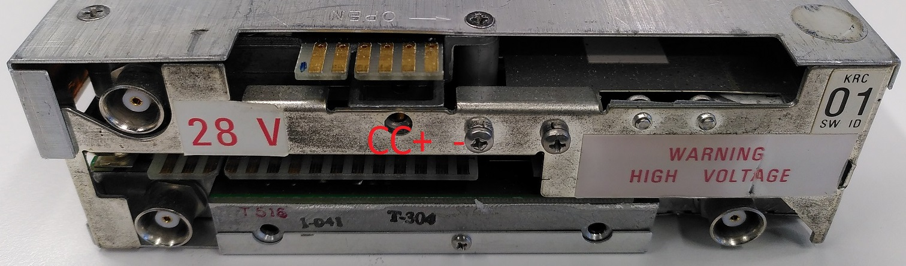
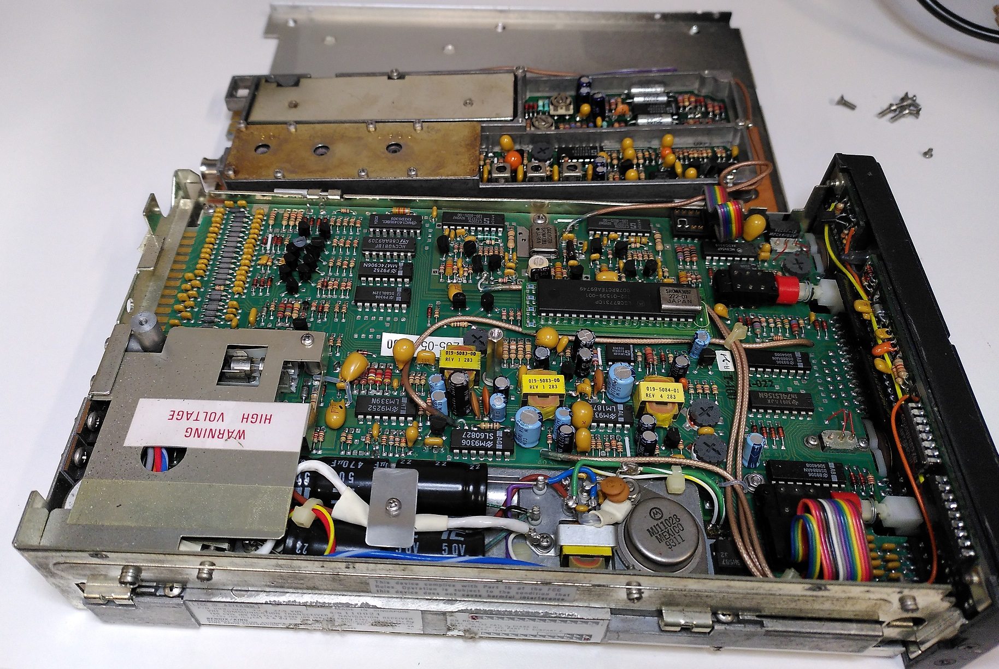

A faulty aircraft radio model Bendix King KX-155 recently came to my hands.
As a private pilot of light General Aviation aircraft for about 2 years, I have used this model of radio in almost all the planes I have flown but never really looked at what goes on behind the scenes.
I decided to take this opportunity to do a teardown of the radio to inspect what are its major components to learn how it works.
But first, what is a Bendix King KX-155?
According to the Installation Manual:
The KX155/165 is a VHF NAV/COMM Transceiver which provides the following functions.
A. Two-way voice communication within the frequency range of 118.00 MHz to 135.975 Mhz (760 channels) in 25kHz increments
B. Reception of navigation signals within the frequency range of 108.00 Mhz to 117.95 Mhz in 50 khz increments (200 channel)
C. Optional reception of glideslope signals within the frequency range of 329.15 Mhz to 335.00 Mhz in 150kHz increments
To explain the above:
108.00 Mhz to 135.975 Mhz is a VHF frequency range reserved worldwide for airband (aircraft band) use.
-
118.00 to 135.975 Mhz is used for pilots to talk to Air-traffic Controllers or other aircraft.
-
108.00 Mhz to 117.95 Mhz is used by VHF omni-directional range (VOR) ground-based navigation system and the localiser of the Instrument Landing System (ILS).
-
329.15 Mhz to 335.00 Mhz is used by the glideslope of the ILS.
The KX-155 is a very common radio used in small General Aviation planes for the past 3 decades.
Exterior
As you can see, the has quite a bit of depth. Its dimensions are 15.875 x 5.207 x 25.81cm. The label mentions it is MADE IN SINGAPORE too!
It seems there are 2 sets of header pins and 3 BNC connectors to connect to 3 antennas to serve the functions of Communication, Nav and Glideslope.
Operating the radio
Since this radio is faulty, I’ll take a screenshot from an online brochure.
To use the radio, the pilot sets the standby frequency on the right (in this case is 136.97) by rotating the selector knob. Pressing the Transfer button will swap the active frequency 118.00 on the left with the standby.
Pressing the Push-to-talk button on the control yoke will tell the radio to use the audio signal from the pilot’s headset microphone and transmit on the active frequency.
The second set of frequencies on the right are for the ground-based navigation systems.
Test-powering the radio from outside the aircraft
For maintenance and testing purposes, it’s possible to power up the radio set from outside the aircraft. This has a useful application as it’s better to verify that the set can turn on before making the effort to install into the plane then finding out it is faulty.
Should this need arise, based on the pinout diagram provided in the installation manual, it is definitely possible to do this on a test bench with the aid of a variable DC Power supply set to the appropriate 13.75V or 27.5VDC output.
Rear pin position (top left of screenshot) where one set is numbered (1 to 18, A to V) and another is (1 to 15, A to S). The top and bottom pins of the same header are generally connected together as they serve the same functions.
For this 28V radio, 27.5V has to be supplied to pin 13P and GND to 15S (notes section). Additionally 11N and 12M have to be connected together.
Markings denoting which pins should be connected.
+: 27.5V
-: GND
C: Connected together
Connection using crocodile clips if you don’t have an appropriate socket.
I’m including this section in the hope that this could be useful for others who wish to build a test bench as information on this process is very limited online and it took me some time for me to understand the manual.
Starting the teardown
Now here comes the fun. I open the top half and I got this!
My first impression was that this PCB design seems to be of the late 80s and early 90s era. PCB layout traces looks to be designed on EDA software instead of the hand drawn traces of the transponder in my previous teardown.
All components are through-hole as well.
Unlike the transponder teardown which I could hardly locate any documentation, a scanned copy of the KX155 maintenance manual can be found online which provides a wealth of information.
Architecture diagram from Maintenance manual
Everything in this radio is controlled by a central microprocessor.
Microprocessor
The chip’s silkscreen logo and text writes “Motorola LSC87731CP”. Googling does not produce any meaningful result. This chip is probably long obsolete.
More jargon. But at least I got an idea of the details behind this chip. Given the small amount of ROM, this chip should be classified as a microcontroller instead…
Display
The KX155 uses a Plasma-Gas Display which is actually more complex than what I initially expected. I found this section really interesting as well.
Here is an example of a radio working in the aircraft, the orange digit segments displays the frequencies selected by the pilot.
The maintenance manual provides the following summary:
Looks really cryptic so I dove deep into the actual board and schematic documentation to understand what does that all mean.
These plasma gas displays are more challenging to control as they operate at higher voltages (>100 VDC) than obviously what the microprocessor can handle.
Therefore 2 special IC drivers (circled) are present to drive the COMM and NAV displays.

I googled what was written on the silkscreen of National Semiconductor DS8884AN to locate the datasheet. Each DS8884AN will receive the Binary Coded Decimal (BCD) input including decimal point from the microprocessor on pins 2-6 and will sink the appropriate amount of current of each segment.
However there are many digits in the display driven by only 2x drivers.
To address this limitation, I found the answer in the schematic. The digit cathodes are multiplexed to the 2x DS8884AN drivers.
The common anode of all segments of each individual digit is then controlled by a separate multiplex counter (I101 and I102 on bottom left). Basically the digits are all connected in parallel to the DS8884AN drivers, but each digit is selectively enabled by another chip.
Consulting the BOM in the maintenance manual says this other chip is a Harris CD4022BFX.
So how this digit selection works is that it will advance the digit selection based on a transition of a clock signal from the microprocessor.
The actual chip in this radio is an alternative part made by ST HCC4022BF located on the display’s PCB.
Radio Section
The Comms and Nav circuitry are located on a second PCB on the bottom of the device.
Upon opening the bottom cover, I was greeted by many metal shields covering the important RF sections. Every section has their own via fence on the PCB to further isolate each section. Components used here are now mostly surface-mounted.
Removing the shields reveal the goodies hidden under it. The isolated section on the top is for the Comms transmission while the bottom is for Nav.
For this teardown, I’ll just focus on the Comms section.
Comms
To understand what I was looking at, I first looked at what the maintenance manual had to say.
To a non-RF person like me, this really looks full of jargon…
The schematic diagram of the Comms section in the scanned maintenance manual is too poor a resolution to be useful so I can only utilise the high-level block diagrams, extremely-blur board layout diagrams and BOM where possible.
Transmit Section
There are many items in this block diagram but there are only several components I can locate on the board.
There are several stages of amplification, some filters and a Transmit/Receiver Switch before connecting to the external antenna.
Receive Section
According to the block diagram, it seems the input signal is filtered, shifted to a 11.4Mhz Intermediate Frequency (IF) as the subsequent circuitry can more easily handle a lower frequency.
Since the received signal is very weak at this point, 2 stages of amplification are required before it can be utilised.
Now this is the more complicated section but I’m sadly unable to locate most of the parts.
These crystals caught my attention:
These 4 11.4Mhz crystals are connected in series which I have not seen in any design before.
According to a reader, this design is called a crystal ladder filter. In the block diagram, this is referred to as “8 Pole Xtal Filter 11.4Mhz”.
The incoming signals fed into the Mixer have already been converted to 11.4Mhz IF. The crystal ladder filter operates as a bandpass filter that attenuates all other frequencies except those close to 11.4Mhz.
The IC on the left is MC1350P according to the BOM. MC1350’s datasheet says it’s an IF amplifier with Automatic Gain Control (AGC). Based on the block diagram, the “2nd IF Amp” is the only one with AGC input feedback from the detector so this should be it.
The date code says 1986. This gives a rough indication of when this radio was produced.
Conclusion
This radio is truly a complex device. I did not have time to look into the NAV and glideslope features. Not being trained as an RF and electrical engineer, everything feels way over my head at this point.
If I did not have access to the Maintenance manuals, I’ll be even more clueless to the design. Even so, knowing the component part numbers is insufficient as some were obsolete before the internet era making their datasheets are hard to locate.
As a private pilot who has been using these radios for years, I have taken their simplicity of operation for granted. The amount of engineering effort to produce these radios is staggering. Much more so for something that was designed to be so compact >30 years ago!
I have definitely gained a greater appreciation of the avionics systems. I truly wonder, how modern avionics systems look like in their insides today?


{kind=link}
{kind=link}
{kind=link}
{kind=link}
{kind=link}
{kind=link}
{kind=link}
{kind=link}
{kind=link}
{kind=link}
{kind=link}
{kind=link}
{kind=link}
{kind=link}
{kind=link}
{kind=link}
{kind=link}
{kind=link}
{kind=link}
{kind=link}
{kind=link}
{kind=link}
{kind=link}
{kind=link}
{kind=link}
{kind=link}
{kind=link}